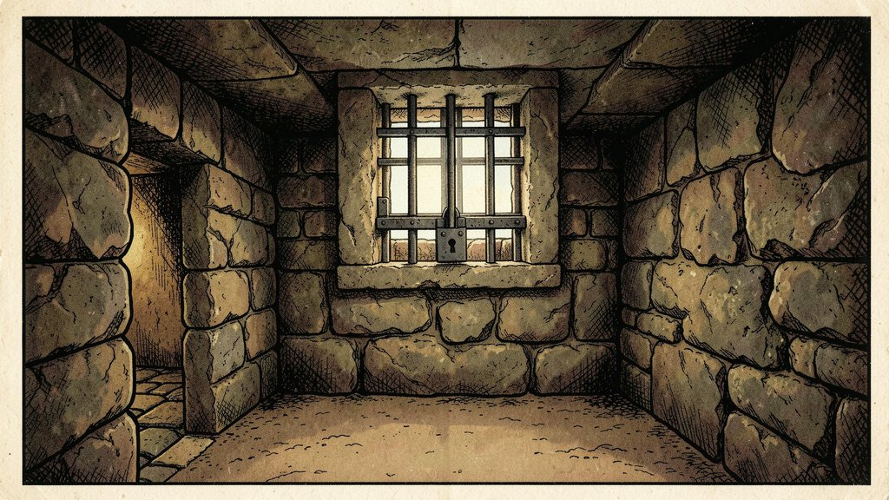
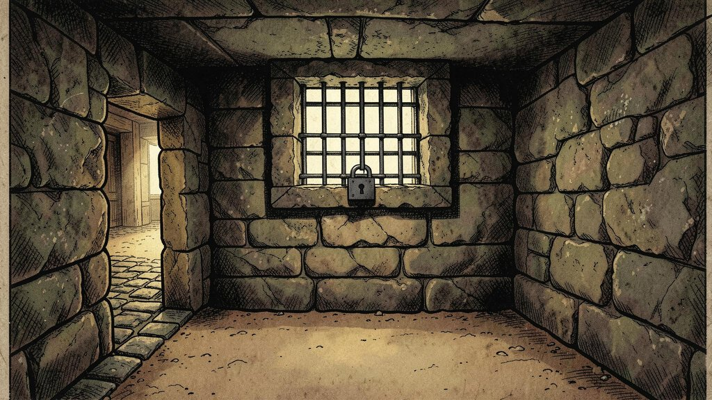
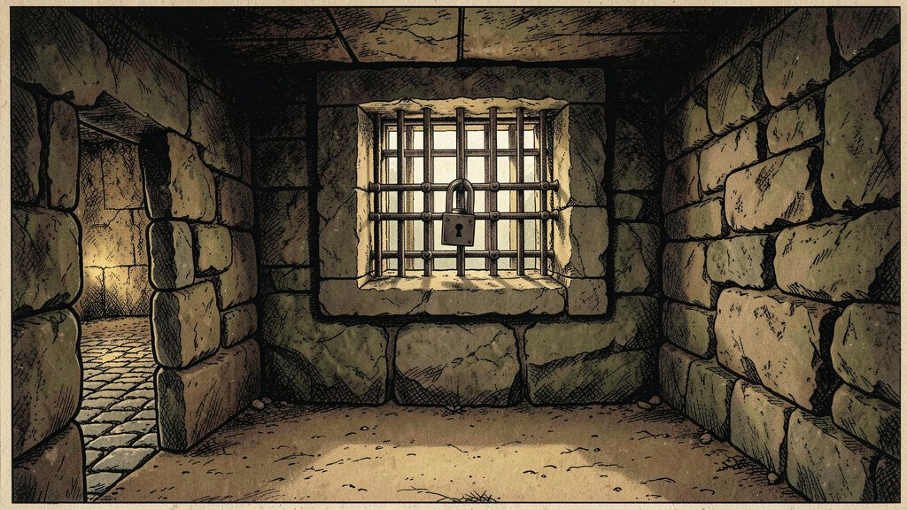
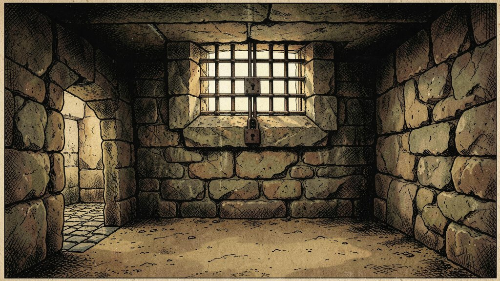
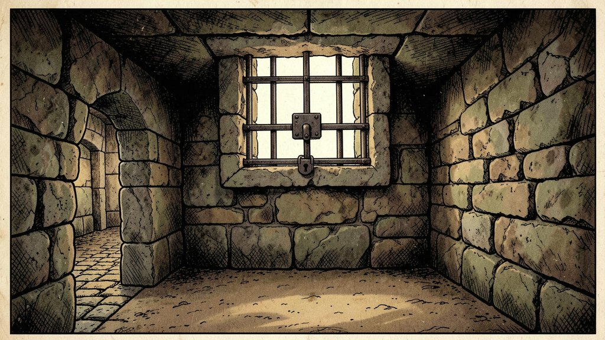

Game text (YAML)
You are in a small chamber beneath a 3x3 steel grate to the surface.
A low crawl over cobbles leads inward to the west.
The grate is locked.
whole input
# location
- LOC_BELOWGRATE:
description:
long: |-
You are in a small chamber beneath a 3x3 steel grate to the surface.
A low crawl over cobbles leads inward to the west.
short: 'You''re below the grate.'
maptag: !!null
conditions: {LIT: true}
travel: [
{verbs: [OUT, UPWAR], cond: [not, GRATE, GRATE_CLOSED], # out, upward
action: [goto, LOC_GRATE]},
{verbs: [OUT], action: [speak, GRATE_NOWAY]}, # out
{verbs: [CRAWL, COBBL, INWAR, WEST], action: [goto, LOC_COBBLE]}, # crawl, cobbles, inward, west
{verbs: [PIT], action: [goto, LOC_PITTOP]}, # pit
{verbs: [DEBRI], action: [goto, LOC_DEBRIS]}, # debris
]
# objects that start here
- GRATE:
words: ['grate']
inventory: '*grate'
locations: [LOC_GRATE, LOC_BELOWGRATE]
immovable: true
states: [GRATE_CLOSED, GRATE_OPEN]
descriptions:
- 'The grate is locked.'
- 'The grate is open.'
changes:
- 'The grate is now locked.'
- 'The grate is now unlocked.'
# where each exit leads (the destination's description in the game)
# LOC_GRATE: You are in a 20-foot depression floored with bare dirt. Set into the dirt is a strong steel grate mounted in concrete. A dry streambed leads into the depression.
# LOC_COBBLE: You are crawling over cobbles in a low passage. There is a dim light at the east end of the passage.
# LOC_PITTOP: At your feet is a small pit breathing traces of white mist. An east passage ends here except for a small crack leading on.
# LOC_DEBRIS: You are in a debris room filled with stuff washed in from the surface. A low wide passage with cobbles becomes plugged with mud and debris here, but an awkward canyon leads upward and west. In the mud someone has scrawled, "MAGIC WORD XYZZY".
Spec writer (DeepSeek)
Picture decisions (draw, why, its checks): the first of 7
- A small chamber of rough weathered stone, seen in a first-person view at standing eye height, with stone walls on both sides and a low stone ceiling above.
- Are stone walls visible on both sides of the image?
- Is a stone ceiling visible above the walls?
the other picture decisions (6)
- A square grate of heavy hand-forged iron bars is set in a stone frame in the ceiling above the middle of the chamber.
- Is a square grate of iron bars visible in the ceiling?
- Is the grate set in a stone frame?
- The iron grate is shut, its bars filling the square opening in the ceiling.
- Are the bars of the iron grate a grid across the ceiling opening?
- A heavy iron padlock and hasp hold the grate shut at the stone frame.
- Is an iron padlock visible on the grate?
- On the left, a low passage with a floor of cobbles runs away out of the frame, and a faint light glows at its far end.
- Is a light visible at the far end of the low passage?
- The floor of the chamber in the foreground is bare packed earth.
- Is the floor of the chamber made of bare packed earth?
- Soft daylight falls from the grate in the ceiling and lights the whole chamber.
- Is daylight falling into the chamber from the grate above?
game sentences → decisions
- You are in a small chamber beneath a 3x3 steel grate to the surface. → decisions 1, 2
- A low crawl over cobbles leads inward to the west. → decisions 5
- The grate is locked. → decisions 3, 4
exits (4)
- drawn: a square opening in the ceiling above
- drawn: a low passage over cobbles on the left
- not drawn
- not drawn
exit checks (3)
- Is a shut iron grate across a square opening in the ceiling above visible in the image?
- Is a square opening in the ceiling above inside the picture?
- Is a low passage over cobbles on the left visible in the image?
Scripts (check_spec.py)
Check list put together: 15 = 3 fixed + 3 exit + 9 from the decisions
the prompt: the decisions' draw sentences, joined in order
A small chamber of rough weathered stone, seen in a first-person view at standing eye height, with stone walls on both sides and a low stone ceiling above. A square grate of heavy hand-forged iron bars is set in a stone frame in the ceiling above the middle of the chamber. The iron grate is shut, its bars filling the square opening in the ceiling. A heavy iron padlock and hasp hold the grate shut at the stone frame. On the left, a low passage with a floor of cobbles runs away out of the frame, and a faint light glows at its far end. The floor of the chamber in the foreground is bare packed earth. Soft daylight falls from the grate in the ceiling and lights the whole chamber.
fixed checks added (3)
- Does the picture show what this sentence describes: "The grate is locked."?
- Are large parts of the scene too dark to see?
- The game takes place in a medieval fantasy world where everything is old and handmade: weathered stone, old brick, rough timber, wrought iron. Is anything out of its time or context visible in the picture, such as a metal pipe, concrete or sheet metal?
Spec judge (Jev)
55 checks · 0 fail
all 55 questions
room · exit (2 checks · 0 fail)
- pass Does the room description mention any place or thing called pit? (p(yes) 0.08, good answer no)
- pass Does the room description mention any place or thing called debris? (p(yes) 0.08, good answer no)
room · label (2 checks · 0 fail)
- pass Is "a square opening in the ceiling above" something a player could see and tap in this room? (p(yes) 0.79, good answer yes)
- pass Is "a low passage over cobbles on the left" something a player could see and tap in this room? (p(yes) 0.92, good answer yes)
picture · decision (7 checks · 0 fail)
- unsure Is this picture decision of img/LOC_BELOWGRATE.GRATE_CLOSED.jpg stated in the YAML or an allowed choice: "The floor of the chamber in the foreground is bare packed earth. (why: The floor of the chamber, kept bare for the objects the game lays over the scene.)"? (p(yes) 0.61, good answer yes)
- pass Is this picture decision of img/LOC_BELOWGRATE.GRATE_CLOSED.jpg stated in the YAML or an allowed choice: "A small chamber of rough weathered stone, seen in a first-person view at standing eye height, with stone walls on both sides and a low stone ceiling above. (why: YAML: 'You are in a small chamber beneath a 3x3 steel grate to the surface.')"? (p(yes) 0.77, good answer yes)
- pass Is this picture decision of img/LOC_BELOWGRATE.GRATE_CLOSED.jpg stated in the YAML or an allowed choice: "A square grate of heavy hand-forged iron bars is set in a stone frame in the ceiling above the middle of the chamber. (why: YAML: 'You are in a small chamber beneath a 3x3 steel grate to the surface.' The grate is the room's fixed object, drawn as it always is; its 'steel' is hand-forged iron in this world.)"? (p(yes) 0.85, good answer yes)
- pass Is this picture decision of img/LOC_BELOWGRATE.GRATE_CLOSED.jpg stated in the YAML or an allowed choice: "The iron grate is shut, its bars filling the square opening in the ceiling. (why: YAML: 'The grate is locked.' The grate's first state, the bars shut.)"? (p(yes) 0.91, good answer yes)
- pass Is this picture decision of img/LOC_BELOWGRATE.GRATE_CLOSED.jpg stated in the YAML or an allowed choice: "A heavy iron padlock and hasp hold the grate shut at the stone frame. (why: YAML: 'The grate is locked.' A padlock is the one visible detail that makes the lock clear.)"? (p(yes) 0.87, good answer yes)
- pass Is this picture decision of img/LOC_BELOWGRATE.GRATE_CLOSED.jpg stated in the YAML or an allowed choice: "On the left, a low passage with a floor of cobbles runs away out of the frame, and a faint light glows at its far end. (why: YAML: 'A low crawl over cobbles leads inward to the west.' West is on the left; the light at the far end is the start of the passage it leads to.)"? (p(yes) 0.83, good answer yes)
- pass Is this picture decision of img/LOC_BELOWGRATE.GRATE_CLOSED.jpg stated in the YAML or an allowed choice: "Soft daylight falls from the grate in the ceiling and lights the whole chamber. (why: The room is lit (LIT: true); the daylight comes down through the grate from the surface.)"? (p(yes) 0.76, good answer yes)
picture · agrees (1 checks · 0 fail)
- unsure Does the generation_prompt of img/LOC_BELOWGRATE.GRATE_CLOSED.jpg agree with the room's description in the YAML? (p(yes) 0.57, good answer yes)
picture · state (1 checks · 0 fail)
- pass Does the generation_prompt of img/LOC_BELOWGRATE.GRATE_CLOSED.jpg show the state GRATE_CLOSED as the YAML describes it? (p(yes) 0.91, good answer yes)
picture · sentence (3 checks · 0 fail)
- pass Do these draw sentences show what this sentence of the game says: "You are in a small chamber beneath a 3x3 steel grate to the surface."? Draw sentences: [1] "A small chamber of rough weathered stone, seen in a first-person view at standing eye height, with stone walls on both sides and a low stone ceiling above." [2] "A square grate of heavy hand-forged iron bars is set in a stone frame in the ceiling above the middle of the chamber." (p(yes) 0.80, good answer yes)
- pass Do these draw sentences show what this sentence of the game says: "A low crawl over cobbles leads inward to the west."? Draw sentences: [5] "On the left, a low passage with a floor of cobbles runs away out of the frame, and a faint light glows at its far end." (p(yes) 0.88, good answer yes)
- pass Do these draw sentences show what this sentence of the game says: "The grate is locked."? Draw sentences: [3] "The iron grate is shut, its bars filling the square opening in the ceiling." [4] "A heavy iron padlock and hasp hold the grate shut at the stone frame." (p(yes) 0.93, good answer yes)
question · drawn (15 checks · 0 fail)
- pass If an image model draws exactly what the generation_prompt of img/LOC_BELOWGRATE.GRATE_CLOSED.jpg describes, would the answer to this question be yes: "Does the picture show what this sentence describes: "The grate is locked."?"? (p(yes) 0.93, good answer yes)
- pass If an image model draws exactly what the generation_prompt of img/LOC_BELOWGRATE.GRATE_CLOSED.jpg describes, would the answer to this question be yes: "Are large parts of the scene too dark to see?"? (p(yes) 0.05, good answer no)
- pass If an image model draws exactly what the generation_prompt of img/LOC_BELOWGRATE.GRATE_CLOSED.jpg describes, would the answer to this question be yes: "The game takes place in a medieval fantasy world where everything is old and handmade: weathered stone, old brick, rough timber, wrought iron. Is anything out of its time or context visible in the picture, such as a metal pipe, concrete or sheet metal?"? (p(yes) 0.17, good answer no)
- pass If an image model draws exactly what the generation_prompt of img/LOC_BELOWGRATE.GRATE_CLOSED.jpg describes, would the answer to this question be yes: "Is a shut iron grate across a square opening in the ceiling above visible in the image?"? (p(yes) 0.97, good answer yes)
- pass If an image model draws exactly what the generation_prompt of img/LOC_BELOWGRATE.GRATE_CLOSED.jpg describes, would the answer to this question be yes: "Is a square opening in the ceiling above inside the picture?"? (p(yes) 0.89, good answer yes)
- pass If an image model draws exactly what the generation_prompt of img/LOC_BELOWGRATE.GRATE_CLOSED.jpg describes, would the answer to this question be yes: "Is a low passage over cobbles on the left visible in the image?"? (p(yes) 0.98, good answer yes)
- pass If an image model draws exactly what the generation_prompt of img/LOC_BELOWGRATE.GRATE_CLOSED.jpg describes, would the answer to this question be yes: "Are stone walls visible on both sides of the image?"? (p(yes) 0.97, good answer yes)
- pass If an image model draws exactly what the generation_prompt of img/LOC_BELOWGRATE.GRATE_CLOSED.jpg describes, would the answer to this question be yes: "Is a stone ceiling visible above the walls?"? (p(yes) 0.98, good answer yes)
- pass If an image model draws exactly what the generation_prompt of img/LOC_BELOWGRATE.GRATE_CLOSED.jpg describes, would the answer to this question be yes: "Is a square grate of iron bars visible in the ceiling?"? (p(yes) 0.98, good answer yes)
- pass If an image model draws exactly what the generation_prompt of img/LOC_BELOWGRATE.GRATE_CLOSED.jpg describes, would the answer to this question be yes: "Is the grate set in a stone frame?"? (p(yes) 0.98, good answer yes)
- pass If an image model draws exactly what the generation_prompt of img/LOC_BELOWGRATE.GRATE_CLOSED.jpg describes, would the answer to this question be yes: "Are the bars of the iron grate a grid across the ceiling opening?"? (p(yes) 0.96, good answer yes)
- pass If an image model draws exactly what the generation_prompt of img/LOC_BELOWGRATE.GRATE_CLOSED.jpg describes, would the answer to this question be yes: "Is an iron padlock visible on the grate?"? (p(yes) 0.98, good answer yes)
- pass If an image model draws exactly what the generation_prompt of img/LOC_BELOWGRATE.GRATE_CLOSED.jpg describes, would the answer to this question be yes: "Is a light visible at the far end of the low passage?"? (p(yes) 0.98, good answer yes)
- pass If an image model draws exactly what the generation_prompt of img/LOC_BELOWGRATE.GRATE_CLOSED.jpg describes, would the answer to this question be yes: "Is the floor of the chamber made of bare packed earth?"? (p(yes) 0.98, good answer yes)
- pass If an image model draws exactly what the generation_prompt of img/LOC_BELOWGRATE.GRATE_CLOSED.jpg describes, would the answer to this question be yes: "Is daylight falling into the chamber from the grate above?"? (p(yes) 0.97, good answer yes)
question · visible (12 checks · 0 fail)
- pass Can this be answered by looking at the picture of img/LOC_BELOWGRATE.GRATE_CLOSED.jpg alone: "Is a shut iron grate across a square opening in the ceiling above visible in the image?"? (p(yes) 0.96, good answer yes)
- pass Can this be answered by looking at the picture of img/LOC_BELOWGRATE.GRATE_CLOSED.jpg alone: "Is a square opening in the ceiling above inside the picture?"? (p(yes) 0.94, good answer yes)
- pass Can this be answered by looking at the picture of img/LOC_BELOWGRATE.GRATE_CLOSED.jpg alone: "Is a low passage over cobbles on the left visible in the image?"? (p(yes) 0.96, good answer yes)
- pass Can this be answered by looking at the picture of img/LOC_BELOWGRATE.GRATE_CLOSED.jpg alone: "Are stone walls visible on both sides of the image?"? (p(yes) 0.97, good answer yes)
- pass Can this be answered by looking at the picture of img/LOC_BELOWGRATE.GRATE_CLOSED.jpg alone: "Is a stone ceiling visible above the walls?"? (p(yes) 0.96, good answer yes)
- pass Can this be answered by looking at the picture of img/LOC_BELOWGRATE.GRATE_CLOSED.jpg alone: "Is a square grate of iron bars visible in the ceiling?"? (p(yes) 0.98, good answer yes)
- pass Can this be answered by looking at the picture of img/LOC_BELOWGRATE.GRATE_CLOSED.jpg alone: "Is the grate set in a stone frame?"? (p(yes) 0.93, good answer yes)
- pass Can this be answered by looking at the picture of img/LOC_BELOWGRATE.GRATE_CLOSED.jpg alone: "Are the bars of the iron grate a grid across the ceiling opening?"? (p(yes) 0.95, good answer yes)
- pass Can this be answered by looking at the picture of img/LOC_BELOWGRATE.GRATE_CLOSED.jpg alone: "Is an iron padlock visible on the grate?"? (p(yes) 0.96, good answer yes)
- pass Can this be answered by looking at the picture of img/LOC_BELOWGRATE.GRATE_CLOSED.jpg alone: "Is a light visible at the far end of the low passage?"? (p(yes) 0.96, good answer yes)
- pass Can this be answered by looking at the picture of img/LOC_BELOWGRATE.GRATE_CLOSED.jpg alone: "Is the floor of the chamber made of bare packed earth?"? (p(yes) 0.88, good answer yes)
- pass Can this be answered by looking at the picture of img/LOC_BELOWGRATE.GRATE_CLOSED.jpg alone: "Is daylight falling into the chamber from the grate above?"? (p(yes) 0.89, good answer yes)
question · clear (12 checks · 0 fail)
- pass Does this ask one clear thing, that two people would read the same way: "Is a shut iron grate across a square opening in the ceiling above visible in the image?"? (p(yes) 0.87, good answer yes)
- pass Does this ask one clear thing, that two people would read the same way: "Is a square opening in the ceiling above inside the picture?"? (p(yes) 0.80, good answer yes)
- pass Does this ask one clear thing, that two people would read the same way: "Is a low passage over cobbles on the left visible in the image?"? (p(yes) 0.86, good answer yes)
- pass Does this ask one clear thing, that two people would read the same way: "Are stone walls visible on both sides of the image?"? (p(yes) 0.88, good answer yes)
- pass Does this ask one clear thing, that two people would read the same way: "Is a stone ceiling visible above the walls?"? (p(yes) 0.87, good answer yes)
- pass Does this ask one clear thing, that two people would read the same way: "Is a square grate of iron bars visible in the ceiling?"? (p(yes) 0.92, good answer yes)
- pass Does this ask one clear thing, that two people would read the same way: "Is the grate set in a stone frame?"? (p(yes) 0.91, good answer yes)
- pass Does this ask one clear thing, that two people would read the same way: "Are the bars of the iron grate a grid across the ceiling opening?"? (p(yes) 0.80, good answer yes)
- pass Does this ask one clear thing, that two people would read the same way: "Is an iron padlock visible on the grate?"? (p(yes) 0.89, good answer yes)
- pass Does this ask one clear thing, that two people would read the same way: "Is a light visible at the far end of the low passage?"? (p(yes) 0.86, good answer yes)
- pass Does this ask one clear thing, that two people would read the same way: "Is the floor of the chamber made of bare packed earth?"? (p(yes) 0.79, good answer yes)
- pass Does this ask one clear thing, that two people would read the same way: "Is daylight falling into the chamber from the grate above?"? (p(yes) 0.78, good answer yes)
Pass 1, round 0 · example · 5 fail · kept

prompt sent
A small chamber of rough weathered stone, seen in a first-person view at standing eye height, with stone walls on both sides and a low stone ceiling above. A square grate of heavy hand-forged iron bars is set in a stone frame in the ceiling above the middle of the chamber. The iron grate is shut, its bars filling the square opening in the ceiling. A heavy iron padlock and hasp hold the grate shut at the stone frame. On the left, a low passage with a floor of cobbles runs away out of the frame, and a faint light glows at its far end. The floor of the chamber in the foreground is bare packed earth. Soft daylight falls from the grate in the ceiling and lights the whole chamber. The picture fills the whole frame, edge to edge. Setting: a medieval fantasy world; everything is old and handmade: weathered stone and old brick, rough timber, wrought iron. Style: 1970s comic book art: bold black ink outlines, hand-inked hatching, flat printed colours with visible halftone dots, slightly off-register colour printing, muted earthy palette of browns, ochres, olive and amber, on aged newsprint. Mood: quiet, still and mysterious, a place long left alone.
Picture judge (Gemma ×2)
15 checks · 5 fail
- fail q4 Is a shut iron grate across a square opening in the ceiling above visible in the image? (good answer: yes, got: no)
The grate is in the wall straight ahead, not in the ceiling. - fail q5 Is a square opening in the ceiling above inside the picture? (good answer: yes, got: no)
The ceiling is made of solid stone slabs. - fail q9 Is a square grate of iron bars visible in the ceiling? (good answer: yes, got: no)
The grate is on the wall, not the ceiling. - fail q11 Are the bars of the iron grate a grid across the ceiling opening? (good answer: yes, got: no)
The grate is on the wall, not the ceiling. - fail q15 Is daylight falling into the chamber from the grate above? (good answer: yes, got: no)
The grate is on the wall, and light is coming through it horizontally.
all 15 checks
exit (3 checks)
- fail q4 Is a shut iron grate across a square opening in the ceiling above visible in the image? (good answer: yes)
no: The grate is in the wall straight ahead, not in the ceiling. / no: The iron grate is on the wall straight ahead, not in the ceiling. - fail q5 Is a square opening in the ceiling above inside the picture? (good answer: yes)
no: The ceiling is made of solid stone slabs. / no: The ceiling is a solid slab of stone. - pass q6 Is a low passage over cobbles on the left visible in the image? (good answer: yes)
yes: There is an opening to a cobbled passage on the left. / yes: There is a stone doorway leading to a cobbled path on the left.
decision (9 checks)
- fail q9 Is a square grate of iron bars visible in the ceiling? (good answer: yes)
no: The grate is on the wall, not the ceiling. / no: The grate is on the wall, not the ceiling. - fail q11 Are the bars of the iron grate a grid across the ceiling opening? (good answer: yes)
no: The grate is on the wall, not the ceiling. / no: The grate is on the wall, not the ceiling. - fail q15 Is daylight falling into the chamber from the grate above? (good answer: yes)
no: The grate is on the wall, and light is coming through it horizontally. / no: The grate is on the wall, not the ceiling. - pass q7 Are stone walls visible on both sides of the image? (good answer: yes)
yes: Stone walls are visible on both the left and right sides. / yes: Both the left and right sides of the frame are composed of stone walls. - pass q8 Is a stone ceiling visible above the walls? (good answer: yes)
yes: Stone slabs form a ceiling above the walls. / yes: A rough stone roof is visible above the walls. - pass q10 Is the grate set in a stone frame? (good answer: yes)
yes: The grate is embedded in a stone wall frame. / yes: The iron grate is surrounded by a stone border. - pass q12 Is an iron padlock visible on the grate? (good answer: yes)
yes: A padlock is shown securing the bars center-bottom. / yes: A padlock is clearly visible in the center of the grate. - pass q13 Is a light visible at the far end of the low passage? (good answer: yes)
yes: Light is coming from the end of the doorway on the left. / yes: There is a bright glow coming from the end of the passage on the left. - pass q14 Is the floor of the chamber made of bare packed earth? (good answer: yes)
yes: The floor is a flat, brownish, sandy surface. / yes: The floor is a flat, sandy, earthy surface.
required (3 checks)
- pass q1 Does the picture show what this sentence describes: "The grate is locked."? (good answer: yes)
yes: A padlock is clearly visible on the iron grate. / yes: There is a padlock on the iron grate. - pass q2 Are large parts of the scene too dark to see? (good answer: no)
no: The image is well-lit and details are visible in all areas. / no: The entire room is clearly visible despite some shadows. - pass q3 The game takes place in a medieval fantasy world where everything is old and handmade: weathered stone, old brick, rough timber, wrought iron. Is anything out of its time or context visible in the picture, such as a metal pipe, concrete or sheet metal? (good answer: no)
no: Only rough stone and wrought iron are visible. / no: Everything shown is stone or iron, fitting the medieval context.
Router (Gemma)
new 5 · $0.001862
- image → new q4 Is a shut iron grate across a square opening in the ceiling above visible in the image?
fix: Move the iron grate from the wall to the ceiling above the center of the room. - image → new q5 Is a square opening in the ceiling above inside the picture?
fix: Create a square opening in the ceiling to house the grate. - image → new q9 Is a square grate of iron bars visible in the ceiling?
fix: Move the iron grate from the wall to the ceiling above the center of the room. - image → new q11 Are the bars of the iron grate a grid across the ceiling opening?
fix: Move the iron grate from the wall to the ceiling above the center of the room. - image → new q15 Is daylight falling into the chamber from the grate above?
fix: Change the light source so that daylight falls vertically from the grate in the ceiling.
Pass 1, round 1 · example_r1 · 5 fail

prompt sent
A small chamber of rough weathered stone, seen in a first-person view at standing eye height, with stone walls on both sides and a low stone ceiling above. A square grate of heavy hand-forged iron bars is set in a stone frame in the ceiling above the middle of the chamber. The iron grate is shut, its bars filling the square opening in the ceiling. A heavy iron padlock and hasp hold the grate shut at the stone frame. On the left, a low passage with a floor of cobbles runs away out of the frame, and a faint light glows at its far end. The floor of the chamber in the foreground is bare packed earth. Soft daylight falls from the grate in the ceiling and lights the whole chamber. The picture fills the whole frame, edge to edge. Setting: a medieval fantasy world; everything is old and handmade: weathered stone and old brick, rough timber, wrought iron. Style: 1970s comic book art: bold black ink outlines, hand-inked hatching, flat printed colours with visible halftone dots, slightly off-register colour printing, muted earthy palette of browns, ochres, olive and amber, on aged newsprint. Mood: quiet, still and mysterious, a place long left alone.

LOC_BELOWGRATE.GRATE_CLOSED.c2.jpg · 5 fail · kept: the picture above
LOC_BELOWGRATE.GRATE_CLOSED.c1.jpg · 5 fail · not keptPicture judge (Gemma ×2)
15 checks · 5 fail
- fail q4 Is a shut iron grate across a square opening in the ceiling above visible in the image? (good answer: yes, got: no)
The grate is on the north wall, not in the ceiling. - fail q5 Is a square opening in the ceiling above inside the picture? (good answer: yes, got: no)
The ceiling is solid stone with no openings. - fail q9 Is a square grate of iron bars visible in the ceiling? (good answer: yes, got: no)
The grate is on the wall, not the ceiling. - fail q11 Are the bars of the iron grate a grid across the ceiling opening? (good answer: yes, got: no)
The grate is on the wall, not the ceiling. - fail q15 Is daylight falling into the chamber from the grate above? (good answer: yes, got: no)
Light is coming through the wall grate, not a ceiling grate.
all 15 checks
exit (3 checks)
- fail q4 Is a shut iron grate across a square opening in the ceiling above visible in the image? (good answer: yes)
no: The grate is on the north wall, not in the ceiling. / no: The grate is in the wall straight ahead, not in the ceiling. - fail q5 Is a square opening in the ceiling above inside the picture? (good answer: yes)
no: The ceiling is solid stone with no openings. / no: The ceiling is solid stone without any openings. - pass q6 Is a low passage over cobbles on the left visible in the image? (good answer: yes)
yes: There is a low doorway with cobblestones on the left. / yes: There is a cobbled passage leading away to the left.
decision (9 checks)
- fail q9 Is a square grate of iron bars visible in the ceiling? (good answer: yes)
no: The grate is on the wall, not the ceiling. / no: The grate is in the wall, not the ceiling. - fail q11 Are the bars of the iron grate a grid across the ceiling opening? (good answer: yes)
no: The grate is on the wall, not the ceiling. / no: The grate is on the wall, not the ceiling. - fail q15 Is daylight falling into the chamber from the grate above? (good answer: yes)
no: Light is coming through the wall grate, not a ceiling grate. / no: The light comes from a grate in the wall, not from above. - pass q7 Are stone walls visible on both sides of the image? (good answer: yes)
yes: There are stone walls on both the left and right sides. / yes: Stone walls are visible on both the left and right sides of the frame. - pass q8 Is a stone ceiling visible above the walls? (good answer: yes)
yes: A stone ceiling is visible at the top of the frame. / yes: A stone ceiling is visible at the top of the image. - pass q10 Is the grate set in a stone frame? (good answer: yes)
yes: The iron bars are set into a stone window frame. / yes: The iron grate is embedded within the stone wall. - pass q12 Is an iron padlock visible on the grate? (good answer: yes)
yes: A padlock is hanging from the center of the grate. / yes: A padlock is visible in the center of the grate. - pass q13 Is a light visible at the far end of the low passage? (good answer: yes)
yes: Bright light is visible through the doorway on the left. / yes: Bright light is visible at the end of the passage on the left. - pass q14 Is the floor of the chamber made of bare packed earth? (good answer: yes)
yes: The floor consists of bare, packed earth. / yes: The floor is sandy, bare earth.
required (3 checks)
- pass q1 Does the picture show what this sentence describes: "The grate is locked."? (good answer: yes)
yes: A padlock is clearly visible on the iron grate. / yes: There is a padlock on the iron grate. - pass q2 Are large parts of the scene too dark to see? (good answer: no)
no: The scene is well-lit except for natural shading in the corners. / no: The corners and edges are shadowed, but all architectural elements remain visible. - pass q3 The game takes place in a medieval fantasy world where everything is old and handmade: weathered stone, old brick, rough timber, wrought iron. Is anything out of its time or context visible in the picture, such as a metal pipe, concrete or sheet metal? (good answer: no)
no: All visible materials are stone, iron, and earth. / no: Everything is made of stone, iron, and dirt.
Router (Gemma)
new 5 · $0.001861
- image → new q4 Is a shut iron grate across a square opening in the ceiling above visible in the image?
fix: Move the iron grate from the wall to the ceiling, centered above the viewer. - image → new q5 Is a square opening in the ceiling above inside the picture?
fix: Create a square opening in the ceiling for the grate. - image → new q9 Is a square grate of iron bars visible in the ceiling?
fix: Move the iron grate from the wall to the ceiling, centered above the viewer. - image → new q11 Are the bars of the iron grate a grid across the ceiling opening?
fix: Move the iron grate from the wall to the ceiling, centered above the viewer. - image → new q15 Is daylight falling into the chamber from the grate above?
fix: Make the light source the grate in the ceiling, casting light downwards into the chamber.
Pass 1, round 2 · example_r2 · 5 fail

prompt sent
A small chamber of rough weathered stone, seen in a first-person view at standing eye height, with stone walls on both sides and a low stone ceiling above. A square grate of heavy hand-forged iron bars is set in a stone frame in the ceiling above the middle of the chamber. The iron grate is shut, its bars filling the square opening in the ceiling. A heavy iron padlock and hasp hold the grate shut at the stone frame. On the left, a low passage with a floor of cobbles runs away out of the frame, and a faint light glows at its far end. The floor of the chamber in the foreground is bare packed earth. Soft daylight falls from the grate in the ceiling and lights the whole chamber. The picture fills the whole frame, edge to edge. Setting: a medieval fantasy world; everything is old and handmade: weathered stone and old brick, rough timber, wrought iron. Style: 1970s comic book art: bold black ink outlines, hand-inked hatching, flat printed colours with visible halftone dots, slightly off-register colour printing, muted earthy palette of browns, ochres, olive and amber, on aged newsprint. Mood: quiet, still and mysterious, a place long left alone.
 LOC_BELOWGRATE.GRATE_CLOSED.c2.jpg · 5 fail · kept: the picture above
LOC_BELOWGRATE.GRATE_CLOSED.c2.jpg · 5 fail · kept: the picture above
LOC_BELOWGRATE.GRATE_CLOSED.c1.jpg · 6 fail · not keptPicture judge (Gemma ×2)
15 checks · 5 fail
- fail q4 Is a shut iron grate across a square opening in the ceiling above visible in the image? (good answer: yes, got: no)
The grate is in a wall, not the ceiling. - fail q5 Is a square opening in the ceiling above inside the picture? (good answer: yes, got: no)
The ceiling is a solid stone surface. - fail q9 Is a square grate of iron bars visible in the ceiling? (good answer: yes, got: no)
The grate is located in the wall, not the ceiling. - fail q11 Are the bars of the iron grate a grid across the ceiling opening? (good answer: yes, got: no)
The grate is in the wall, not the ceiling. - fail q15 Is daylight falling into the chamber from the grate above? (good answer: yes, got: no)
The grate is in the wall, not above.
all 15 checks
exit (3 checks)
- fail q4 Is a shut iron grate across a square opening in the ceiling above visible in the image? (good answer: yes)
no: The grate is in a wall, not the ceiling. / no: The grate is in a wall, not in the ceiling. - fail q5 Is a square opening in the ceiling above inside the picture? (good answer: yes)
no: The ceiling is a solid stone surface. / no: The ceiling is a solid stone surface. - pass q6 Is a low passage over cobbles on the left visible in the image? (good answer: yes)
yes: There is an arched opening with cobbles on the left. / yes: There is an arched stone doorway on the left leading to a cobbled area.
decision (9 checks)
- fail q9 Is a square grate of iron bars visible in the ceiling? (good answer: yes)
no: The grate is located in the wall, not the ceiling. / no: The grate is set into the wall, not the ceiling. - fail q11 Are the bars of the iron grate a grid across the ceiling opening? (good answer: yes)
no: The grate is in the wall, not the ceiling. / no: The grate is on the wall, not the ceiling. - fail q15 Is daylight falling into the chamber from the grate above? (good answer: yes)
no: The grate is in the wall, not above. / no: The grate is on the wall, and light is coming through it. - pass q7 Are stone walls visible on both sides of the image? (good answer: yes)
yes: Stone walls are visible on the far left and far right. / yes: Stone block walls are visible on both the left and right edges. - pass q8 Is a stone ceiling visible above the walls? (good answer: yes)
yes: A flat stone ceiling is visible at the top of the frame. / yes: A flat stone ceiling is visible at the top of the frame. - pass q10 Is the grate set in a stone frame? (good answer: yes)
yes: The grate is surrounded by stone blocks. / yes: The grate is surrounded by stone blocks. - pass q12 Is an iron padlock visible on the grate? (good answer: yes)
yes: Two padlocks are visible on the iron bars. / yes: There are padlocks visible on the iron bars. - pass q13 Is a light visible at the far end of the low passage? (good answer: yes)
yes: The interior of the passage is brightly lit. / yes: The area through the passage on the left is brightly lit. - pass q14 Is the floor of the chamber made of bare packed earth? (good answer: yes)
yes: The floor has the texture and color of packed dirt. / yes: The floor has a rough, dirt-like texture.
required (3 checks)
- pass q1 Does the picture show what this sentence describes: "The grate is locked."? (good answer: yes)
yes: There are padlocks on the bars of the grate. / yes: There are padlocks on the iron grate. - pass q2 Are large parts of the scene too dark to see? (good answer: no)
no: The room is well-lit by the grate with no obscured areas. / no: The lighting is clear enough to see all corners of the room. - pass q3 The game takes place in a medieval fantasy world where everything is old and handmade: weathered stone, old brick, rough timber, wrought iron. Is anything out of its time or context visible in the picture, such as a metal pipe, concrete or sheet metal? (good answer: no)
no: Only weathered stone and wrought iron are visible. / no: Only stone and iron are visible, which fit the time period.
Router (Gemma)
new 5 · $0.001861
- image → new q4 Is a shut iron grate across a square opening in the ceiling above visible in the image?
fix: Move the iron grate from the wall to the ceiling, centered above the viewer. - image → new q5 Is a square opening in the ceiling above inside the picture?
fix: Create a square opening in the ceiling for the grate. - image → new q9 Is a square grate of iron bars visible in the ceiling?
fix: Move the iron grate from the wall to the ceiling, centered above the viewer. - image → new q11 Are the bars of the iron grate a grid across the ceiling opening?
fix: Move the iron grate from the wall to the ceiling, centered above the viewer. - image → new q15 Is daylight falling into the chamber from the grate above?
fix: Move the iron grate to the ceiling and make the daylight fall vertically from it.